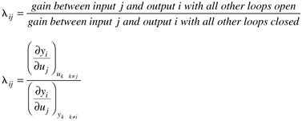

13.10 Summary
The purpose of this chapter was to develop a technique (the RGA) to assist us with the decision of how to pair input and output variables to form multiple SISO control loops. The relative gain between output i and input j is defined as

and the RGA is a matrix of relative gains. Some of the important things that we learned about the RGA are summarized below.
The rows and columns of the RGA sum to 1 Do not pair on a negative or zero relative gain Try to pair on relative gains close to 1 If you cannot pair on positive relative gains, or if the relative gains are high (>25), then the number of closed-loop control loops must generally be reduced; that is, one or more loops must be placed on manual control Switching rows on the process gain and relative gain matrices is equivalent to renumbering the outputs; switching columns on the process gain and relative gain matrices is equivalent to renumbering the inputs After selecting variable pairings, check the relative gain array for all subsystems to make certain that they are not sensitive to controller failure
 |